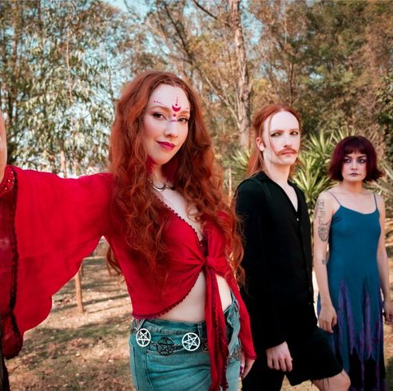
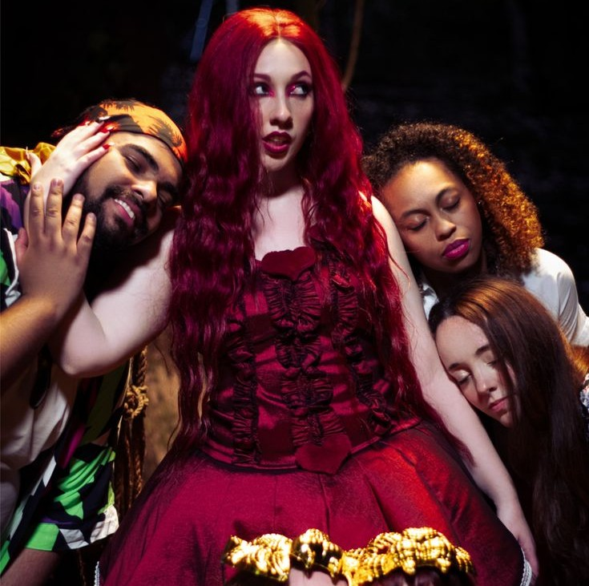
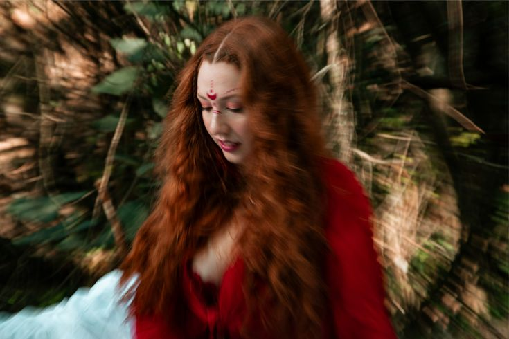

Letra
Se todo dia eu tô só buscando paz
De pé descalço na areia eu quero mais
Limão do pé, vida caseira
Beija flor
Conectada com tudo ao meu redor
E cai, cai pingos de chuva
Traz paz na minha vida
Mais, mais de good vibes
Vi-vibes
Vi-vibes
Vi-vibes
Eu tô te falando que nunca existiu uma versão
De mim que fosse tão calma
Tudo é em vão
Hipocrisia da minha parte
Vida vazia, não é a minha arte
E tenho medo, muito medo
Acho até que é pavor
De good vibes cheio de veneno
Acho um horror
De pé descalço pra sentir
O inimigo bem na sola
Eu tô te vendo bem agora
Uh, uh ah
Eles te veem na televisão
Que boa pinta
Cara muito gente fina
Quanto talento, que voz de vilão
Nem imaginam que essa voz me alucina
Traz paz na minha vida
Mais, mais de good vibes
Vi-vibes
Vi-vibes
Vai pra bem longe com a
Tua imaturidade
Alugou uma cidade
Só por vaidade
Vai e volta quando quer
Sem pedir licença
Cada porta aberta
É direito de nascença
Meu (tu)
Pra essa tua bondade que (tu)
Eu sei da verdade
É fachada e não vale nada
Minha raiva é mais sincera
Do que tua cantada
Uh, ah, uh
Eles te veem na televisão
Que boa pinta
Cara muito gente fina
Quanto talento, que voz de vilão
Nem imaginam que essa voz
Me alucina
Traz paz na minha vida
Mais, mais de good vibes
Vi-vibes
Vi-vibes
E se eu falar mais um minuto
Acho que da pra perceber
O quanto que eu não suporto
Essa energia de fu (ei)
Eu acho que tô delirando
Será que é um pesadelo?
Caí nessa armadilha
Isso aqui é um bueiro
Tanta gente concentrada
Em si mesmo
Tem sorriso pra vender
Nada de bom pra entregar
Olho vazio e boca cheia
Tanta coisa pra falar
Que não significa nada
Seria melhor calar
Vibes (vibes, vibes)
Eles te veem na televisão
Que boa pinta
Cara muito gente fina
Quanto talento, que voz de vilão
Nem imaginam que essa voz
Me alucina
Traz paz na minha vida
Mais, mais de good vibes
Vi-vibes
Vi-vibes
Eles te veem
Eles te veem e não te vê
Eles te veem
Eles te veem na TV
Eles te veem
Eles te veem e não te vê
E não te vê
Ah hm
Imagens ilustrativas


